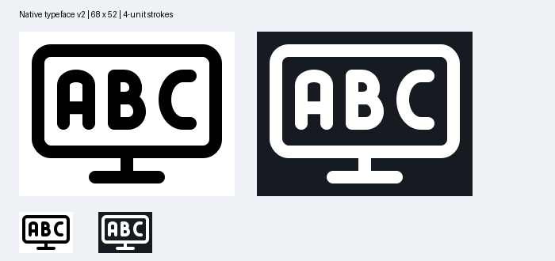

1. Airplane taking off — PASS
No defining parts omitted; proportions broadened for clearance.
SVGNine strict passes; ABC monitor uses the authorized native typeface v2 size exception.
No defining parts omitted; proportions broadened for clearance.
SVGNo parts omitted; pie rim adjusted to clear the frame and diagonal spoke.
SVGNumeral 1 loses its short lead-in; corners are square; plus is very compact.
SVGNo parts omitted; wheel centers moved inward and lower corners squared.
SVGNo parts omitted; wheel centers moved inward and lower corners squared.
SVG
68×52 canvas; unchanged v2 glyphs; 4-unit strokes and letter gaps. Native typeface layout checks pass. Not a strict SOLO48 pass.
SVGNo marks omitted; frame made taller with square corners and shorter operator bars.
SVGNo parts omitted; shoulder arch is shallow to retain bottom clearance.
SVGNo parts omitted; hands are necessarily very short (2 units each) and less legible at native size.
SVGNo parts omitted; fold enlarged to avoid the pinched pocket.
SVG